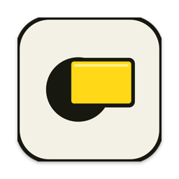

Assistance
Une question, un problème ? Écrivez à contact@sereneye.com. Réponse sous 48 h.
Où se trouve l'app ?
Sereneye vit dans la barre des menus, en haut à droite de l'écran (icône rond et écran). Cliquez dessus pour allumer le filtre et régler la température et la luminosité. « Ouvrir Sereneye… » affiche tous les réglages.
Je ne vois pas l'icône dans la barre des menus
Sur les MacBook avec encoche, les icônes peuvent être cachées quand il y en a beaucoup. Retirez-en quelques-unes, ou ouvrez l'app depuis le dossier Applications : la fenêtre de réglages s'affiche.
Le filtre ne s'allume pas au coucher du soleil
Vérifiez que « Automatique : au coucher du soleil » est coché et que l'accès à la position est autorisé dans Réglages Système → Confidentialité et sécurité → Service de localisation. Sans position, l'app utilise 20 h – 7 h.
Les couleurs de mes photos sont faussées
Ajoutez vos apps photo et vidéo dans « Pause pendant » : le filtre se met en pause automatiquement quand elles sont au premier plan.
J'ai oublié mon mot de passe
Dans la fenêtre de connexion, choisissez « Se connecter », entrez votre adresse e-mail, puis cliquez sur « Mot de passe oublié ? ». Un e-mail vous permet d'en choisir un nouveau.
Je n'ai pas reçu l'e-mail de confirmation
Regardez dans vos courriers indésirables. Sinon, écrivez-nous : nous pouvons confirmer votre compte.
Supprimer mon compte
Dans la fenêtre de l'app, ligne « Compte » → « Supprimer mon compte… », ou menu Sereneye → « Supprimer mon compte… ». Votre compte et votre adresse e-mail sont effacés définitivement. Votre achat reste lié à votre identifiant Apple.
Récupérer mon achat sur un autre Mac
Connectez-vous à l'App Store avec le même identifiant Apple, ouvrez Sereneye, puis cliquez sur « Restaurer mes achats » dans la fenêtre d'achat ou dans le menu de l'app.
Demander un remboursement
Les remboursements sont gérés par Apple : reportaproblem.apple.com.